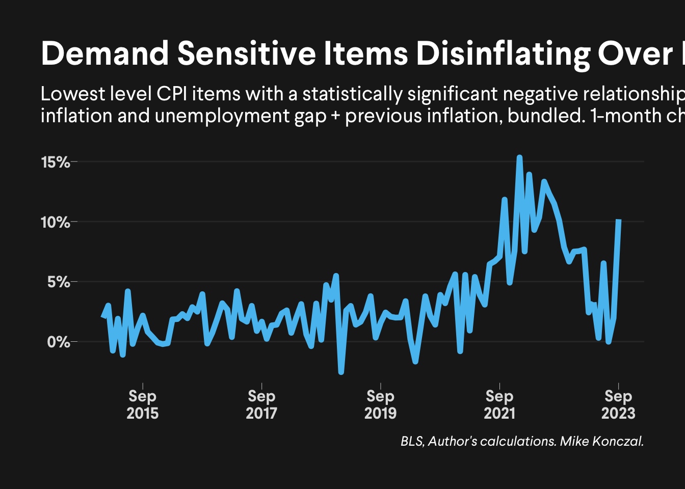

knitr::opts_chunk$set(warning = FALSE, message = FALSE)last_mile_of_inflation
Will the Last Mile of Inflation be the Hardest?
Code for the blog post.
Loading and setting up libraries.
library(tidyverse)
library(janitor)
library(lubridate)
library(scales)
library(viridis)
library(quantmod)
library(broom)
library(httr)
library(data.table)
library(ggrepel)
library(hrbrthemes)
library(stargazer)
##### SET UP SOME THINGS #####
theme_lass <- theme_modern_rc(ticks = TRUE) + theme(
legend.position = "none", legend.title = element_blank(),
panel.grid.major.y = element_line(size = 0.5),
panel.grid.minor.y = element_blank(),
plot.title.position = "plot",
axis.title.x = element_blank(),
axis.title.y = element_blank(),
plot.title = element_text(size = 25, face = "bold"),
plot.subtitle = element_text(size = 15, color = "white"),
plot.caption = element_text(size = 10, face = "italic"),
legend.text = element_text(size = 12),
axis.text.y = element_text(size = 12, face = "bold"),
axis.text.x = element_text(size = 12, face = "bold"),
strip.text = element_text(face = "bold", color = "white", hjust = 0.5, size = 10),
panel.grid.major.x = element_blank(),
panel.grid.minor.x = element_blank(),
strip.background = element_blank()
) +
theme(
text = element_text(family = "Larsseit"),
plot.title = element_text(family = "Larsseit"),
plot.subtitle = element_text(family = "Larsseit"),
plot.caption = element_text(family = "Larsseit"),
strip.text = element_text(family = "Larsseit")
)Phillips Curves
Load CPI Flat Files
Load the CPI flat files from the BLS website.
# Configurations
config <- list(
user_email = "rortybomb@gmail.com",
weights_file_path = "data/inflation_weights.csv",
weights_2023_file_path = "data/inflation_weights_2023.csv",
cpi_data_url = "https://download.bls.gov/pub/time.series/cu/cu."
)
#' Get and Process Data
#' This function retrieves and processes data from a specified endpoint.
download_data <- function(endpoint, base_url, user_email) {
response <- GET(paste0(base_url, endpoint), user_agent(user_email))
if (http_error(response)) {
stop("Data could not be downloaded from URL: ", paste0(base_url, endpoint))
}
data <- content(response, as = "text") %>%
fread() %>%
clean_names()
return(data)
}
# SECTION 1: READ IN AND CLEAN UP DATA
endpoints <- c("data.0.Current", "series", "item", "area")
for (i in endpoints) {
assign(i, download_data(i, config$cpi_data_url, config$user_email))
}
data.0.Current <- data.0.Current %>%
mutate(
value = as.numeric(value),
series_id = str_trim(series_id),
date = as.Date(paste(substr(period, 2, 3), "01", year, sep = "/"), "%m/%d/%Y")
)
series <- series %>%
mutate(series_id = str_trim(series_id))
series <- series %>%
inner_join(item, by = c("item_code")) %>%
inner_join(area, by = c("area_code"))
cpi_data <- inner_join(data.0.Current, series, by = c("series_id"))
# Add weight data
cpi_weights <- read_csv(file = config$weights_file_path) %>% select(-year_weight)
cpi_data <- inner_join(cpi_data, cpi_weights, by = c("item_name"))
cpi_weights_2023 <- read_csv(file = config$weights_2023_file_path) %>% select(item_name, weight_2023 = weight, year = year_weight)
cpi_data <- left_join(cpi_data, cpi_weights_2023, by = c("item_name", "year"))
cpi_data$weight <- ifelse(!is.na(cpi_data$weight_2023), cpi_data$weight_2023, cpi_data$weight)
# Clean up the environment
rm(data.0.Current, series, item, area, cpi_weights, cpi_weights_2023)
cpi <- cpi_data %>%
filter(period != "M13") %>%
filter(seasonal == "S") %>%
arrange(date) %>%
group_by(item_name) %>%
mutate(Pchange1 = (value / lag(value) - 1)) %>%
mutate(Pchange1a = (1 + Pchange1)^12 - 1) %>%
mutate(Wchange1 = (Pchange1 * weight) / 100) %>%
mutate(Wchange1a = (1 + Wchange1)^12 - 1) %>%
mutate(Pchange3 = (value / lag(value, 3) - 1)) %>%
mutate(Pchange3a = (1 + Pchange3)^12 - 1) %>%
mutate(Wchange3 = (Pchange3 * weight) / 100) %>%
mutate(Wchange3a = (1 + Wchange3)^4 - 1) %>%
mutate(Pchange12 = (value / lag(value, 12) - 1)) %>%
mutate(Wchange12 = (Pchange12 * weight) / 100) %>%
ungroup()Run Regressions
Let’s run item level Phillips Curves.
getSymbols("UNRATE", src = "FRED")[1] "UNRATE"unrate <- as_tibble(data.frame(date = index(UNRATE), unrate <- UNRATE[, 1]))
colnames(unrate) <- tolower(colnames(unrate))
getSymbols("NROU", src = "FRED")[1] "NROU"nrou <- as_tibble(data.frame(date = index(NROU), NROU <- NROU[, 1]))
colnames(nrou) <- tolower(colnames(nrou))
unrate <- unrate %>% left_join(nrou, by = "date")
# NROU is quarterly, push the values forward.
unrate$nrou <- na.locf(unrate$nrou, na.rm = FALSE)
unrate$u_gap <- unrate$unrate - unrate$nrou
unrate <- unrate %>% mutate(unrate = unrate / 100, nrou = nrou / 100, u_gap = u_gap / 100)
cpi_lowest <- read_csv("data/cpi_lowest_prices.csv") %>% filter(lowest == 1)
cpi_analysis <- cpi %>%
left_join(unrate, by = "date") %>%
filter(item_name %in% cpi_lowest$item_name)cpi_lm <- cpi_analysis %>%
filter(date >= "2000-01-01") %>%
group_by(item_name) %>%
# Regression: inflation = lagged inflation + unemployment gap
do(tidy(lm(Pchange1a ~ lag(Pchange1a) + I(unrate - nrou), data = .))) %>%
# Filter for statistically significant negative esimates on unemployment gap
filter(term == "I(unrate - nrou)", statistic < -1.95) %>%
arrange(statistic)
print(cpi_lm %>% select(item_name, term, estimate, statistic), n = Inf)# A tibble: 16 × 4
# Groups: item_name [16]
item_name term estimate statistic
<chr> <chr> <dbl> <dbl>
1 Rent of primary residence I(unrate - n… -0.146 -4.29
2 Owners' equivalent rent of primary residence I(unrate - n… -0.115 -3.64
3 Day care and preschool I(unrate - n… -0.324 -3.39
4 Laundry and dry cleaning services I(unrate - n… -0.413 -3.32
5 Other food away from home I(unrate - n… -0.412 -2.77
6 Pets and pet products I(unrate - n… -0.535 -2.72
7 Full service meals and snacks I(unrate - n… -0.155 -2.58
8 Pet services including veterinary I(unrate - n… -0.393 -2.53
9 Elementary and high school tuition and fees I(unrate - n… -0.213 -2.51
10 Electricity I(unrate - n… -0.721 -2.43
11 Garbage and trash collection I(unrate - n… -0.318 -2.33
12 Legal services I(unrate - n… -0.772 -2.27
13 Funeral expenses I(unrate - n… -0.201 -2.25
14 Motor vehicle repair I(unrate - n… -0.512 -2.15
15 Other dairy and related products I(unrate - n… -0.678 -2.07
16 Wine at home I(unrate - n… -0.312 -1.99Graph Index
Let’s draw graphs of each item.
housing <- c("Owners' equivalent rent of primary residence", "Rent of primary residence")
index <- cpi %>%
# filter out housing categories
filter(item_name %in% cpi_lm$item_name, !(item_name %in% housing), year(date) > 2014) %>%
mutate(weight = weight / 100) %>%
group_by(date) %>%
summarize(
change = sum(Wchange1),
weight = sum(weight),
changeW = change / weight,
changeWA = (changeW + 1)^12 - 1
) %>%
ungroup()
index_dates <- seq(max(index$date), length.out = 20, by = paste0("-", 24, " months"))
index %>%
ggplot(aes(date, changeWA)) +
geom_line(size = 2) +
theme_classic() +
labs(
x = "", y = "",
title = "Demand Sensitive Items Disinflating Over Past Year",
subtitle = "Lowest level CPI items with a statistically significant negative relationship between\ninflation and unemployment gap + previous inflation, bundled. 1-month change annualized.",
caption = "BLS, Author's calculations. Mike Konczal."
) +
theme(panel.grid.major.y = element_line(size = 0.5)) +
theme(plot.title.position = "plot") +
scale_y_continuous(labels = percent) +
scale_x_date(date_labels = "%b\n%Y", labels = index_dates) +
scale_color_manual(values = c("#2D779C", "#A4CCCC")) +
theme(legend.position = c(0.35, 0.9))
ggsave("graphics/demand_index.png", width = 12, height = 8, dpi = "retina")Nonlinear Beveridge-Phillips Curve
Download Necessary Data
We write a function that takes in an array of FRED variables, loops through them, downloading and formatting them. We then rename them, clean up percentages and create a new v/u variable.
# Function for downloading data from FRED
prep_FRED_data <- function(x) {
getSymbols(x, src = "FRED")
df <- get(x)
df <- as_tibble(data.frame(Date = index(df))) %>%
bind_cols(setNames(list(as.numeric(df[, x])), x))
colnames(df) <- tolower(colnames(df))
return(df)
}
# List of variables to download
fred_variables <- c("UNRATE", "CPILFESL", "JTSJOR", "JTSQUR", "PCEPILFE", "JTSQUL", "PAYEMS")
# Download process, doing some manipulations so the characters become variable names
for (i in fred_variables) {
prep_FRED_data(i)
data <- prep_FRED_data(i)
assign(tolower(i), data, envir = .GlobalEnv)
rm(data)
}
pc_data <- get(tolower(fred_variables[1]))
# Joining them all into one dataset. This dataset is monthly, with quarterly values missing dates as NA.
for (i in fred_variables[-1]) {
pc_data <- full_join(pc_data, get(tolower(i)), by = "date")
}
pc_data <- pc_data %>%
arrange(date) %>%
rename(
core_cpi = cpilfesl,
job_openings = jtsjor,
quits = jtsqur,
core_pce = pcepilfe,
quits_level = jtsqul,
employment_level = payems
) %>%
mutate(
core_cpi = (core_cpi / lag(core_cpi, 3))^4 - 1,
core_pce = (core_pce / lag(core_pce, 3))^4 - 1,
v_u = job_openings / unrate,
quits = quits / 100,
my_quits = quits_level / employment_level
) %>%
na.omit() %>%
select(-core_cpi)Run Regressions
pc_data_all <- pc_data %>% mutate(core_pce_all = core_pce)
pc_data_pre_2019 <- pc_data %>%
mutate(core_pce_pre_2019 = core_pce) %>%
filter(year(date) <= 2019)
m1 <- lm(core_pce_pre_2019 ~ quits, data = pc_data_pre_2019)
m2 <- lm(core_pce_pre_2019 ~ I(quits^2), data = pc_data_pre_2019)
m3 <- lm(core_pce_pre_2019 ~ quits + I(quits^2), data = pc_data_pre_2019)
m4 <- lm(core_pce_all ~ quits, data = pc_data_all)
m5 <- lm(core_pce_all ~ I(quits^2), data = pc_data_all)
m6 <- lm(core_pce_all ~ quits + I(quits^2), data = pc_data_all)stargazer(m1, m2, m3, m4, m5, m6,
type = "html",
dep.var.labels = c("2000 to 2019", "2000 to 2023"),
header = FALSE,
title = "Regression Results for Quits and 3-Month Core Inflation",
# the next line doesn't work in html formatting?
#covariate.labels = c("$quits$", "$quits^2"),
no.space = TRUE,
omit.stat = c("f", "ser")
)| Dependent variable: | ||||||
| 2000 to 2019 | 2000 to 2023 | |||||
| (1) | (2) | (3) | (4) | (5) | (6) | |
| quits | 0.560*** | 1.200 | 2.124*** | -8.785*** | ||
| (0.145) | (1.833) | (0.154) | (1.048) | |||
| I(quits2) | 15.009*** | -17.403 | 55.388*** | 267.453*** | ||
| (3.928) | (49.661) | (3.541) | (25.482) | |||
| Constant | 0.006** | 0.012*** | 0.001 | -0.022*** | -0.002 | 0.085*** |
| (0.003) | (0.002) | (0.017) | (0.003) | (0.002) | (0.011) | |
| Observations | 229 | 229 | 229 | 273 | 273 | 273 |
| R2 | 0.062 | 0.060 | 0.062 | 0.413 | 0.474 | 0.583 |
| Adjusted R2 | 0.058 | 0.056 | 0.054 | 0.411 | 0.473 | 0.580 |
| Note: | p<0.1; p<0.05; p<0.01 | |||||
Draw Graphics
jo_pc_lm <- lm(core_pce ~ I(v_u^2), data = pc_data)
summary(jo_pc_lm)
Call:
lm(formula = core_pce ~ I(v_u^2), data = pc_data)
Residuals:
Min 1Q Median 3Q Max
-0.027761 -0.005402 0.000170 0.004935 0.040134
Coefficients:
Estimate Std. Error t value Pr(>|t|)
(Intercept) 0.0139232 0.0007237 19.24 <2e-16 ***
I(v_u^2) 0.0094347 0.0006431 14.67 <2e-16 ***
---
Signif. codes: 0 '***' 0.001 '**' 0.01 '*' 0.05 '.' 0.1 ' ' 1
Residual standard error: 0.009349 on 271 degrees of freedom
Multiple R-squared: 0.4427, Adjusted R-squared: 0.4406
F-statistic: 215.2 on 1 and 271 DF, p-value: < 2.2e-16# jolts_pc_lm <- lm(core_cpi ~ v_u + supply_chains, data=jolts_pc)
# summary(jolts_pc_lm)
pc_data$predicted <- predict(jo_pc_lm, pc_data)
pc_data %>%
mutate(recent = date > max(date) %m-% months(4)) %>%
mutate(recent_v_u = if_else(recent, v_u, as.double(NA))) %>%
mutate(label = if_else(date == max(date), format(date, "%b,\n%Y"), as.character(NA))) %>%
mutate(color_pandemic = if_else(year(date) >= 2021, "2021-", "2000-2020")) %>%
mutate(last_value = if_else(date == max(date), v_u, as.double(NA))) %>%
ggplot(aes(v_u, core_pce, label = label)) +
theme_lass +
geom_point(aes(color = color_pandemic)) +
geom_line(aes(v_u, predicted), show.legend = FALSE) +
geom_path(aes(recent_v_u, core_pce), color = "pink") +
geom_text_repel(color = "pink") +
geom_point(aes(last_value, core_pce), color = "pink", show.legend = FALSE) +
scale_y_continuous(labels = percent) +
labs(
title = "Sliding off the Nonlinear Beveridge-Phillips Curve",
subtitle = "3-month core PCE change versus Vacancies-to-Unemployment Ratio, 2000 - Current",
x = "Vacancy-to-unemployment ratio", y = "3-month core PCE change",
caption = "BLS, Seasonally Adjusted, Mike Konczal, Roosevelt Institute"
) +
theme(
axis.text.x = element_text(size = 15, face = "bold"),
axis.text.y = element_text(size = 15, face = "bold"),
axis.title.x = element_text(size = 15, margin = margin(t = 20, r = 0, b = 0, l = 0)),
axis.title.y = element_text(size = 14, angle = 90, color = "white", vjust = 3)
) +
theme(panel.grid.minor = element_blank()) +
theme(panel.grid.major = element_blank()) +
theme(legend.position = c(0.7, 0.8))ggsave("graphics/jolts_PC_jo.png", width = 12, height = 8, dpi = "retina")jo_pc_lm <- lm(core_pce ~ my_quits + I(my_quits^2), data = pc_data)
summary(jo_pc_lm)
Call:
lm(formula = core_pce ~ my_quits + I(my_quits^2), data = pc_data)
Residuals:
Min 1Q Median 3Q Max
-0.0281847 -0.0041956 -0.0003008 0.0053485 0.0244784
Coefficients:
Estimate Std. Error t value Pr(>|t|)
(Intercept) 0.08460 0.01051 8.046 2.72e-14 ***
my_quits -8.71603 1.03953 -8.385 2.85e-15 ***
I(my_quits^2) 266.01230 25.23276 10.542 < 2e-16 ***
---
Signif. codes: 0 '***' 0.001 '**' 0.01 '*' 0.05 '.' 0.1 ' ' 1
Residual standard error: 0.008014 on 270 degrees of freedom
Multiple R-squared: 0.5919, Adjusted R-squared: 0.5889
F-statistic: 195.8 on 2 and 270 DF, p-value: < 2.2e-16# jolts_pc_lm <- lm(core_cpi ~ v_u + supply_chains, data=jolts_pc)
# summary(jolts_pc_lm)
pc_data$predicted <- predict(jo_pc_lm, pc_data)
pc_data %>%
mutate(recent = date > max(date) %m-% months(4)) %>%
mutate(recent_quits = if_else(recent, my_quits, as.double(NA))) %>%
mutate(label = if_else(date == max(date), format(date, "%b,\n%Y"), as.character(NA))) %>%
mutate(color_pandemic = if_else(year(date) >= 2021, "2021-", "2000-2020")) %>%
mutate(last_value = if_else(date == max(date), my_quits, as.double(NA))) %>%
ggplot(aes(my_quits, core_pce, label = label)) +
theme_lass +
geom_point(aes(color = color_pandemic)) +
geom_line(aes(my_quits, predicted), show.legend = FALSE) +
geom_path(aes(recent_quits, core_pce), color = "palegreen") +
geom_text_repel(color = "palegreen") +
geom_point(aes(last_value, core_pce), color = "palegreen", show.legend = FALSE) +
scale_y_continuous(labels = percent) +
scale_x_continuous(labels = percent) +
labs(
title = "Back to where we started?",
subtitle = "3-month core PCE change versus Quits, 2000 - Current, Regression line is quits + quits^2.",
x = "Quits Rate", y = "3-month core PCE change",
caption = "BLS, Seasonally Adjusted, Quits rate taken as quits level over CES employment level. Mike Konczal, Roosevelt Institute"
) +
theme(
axis.text.x = element_text(size = 15, face = "bold"),
axis.text.y = element_text(size = 15, face = "bold"),
axis.title.x = element_text(size = 15, margin = margin(t = 20, r = 0, b = 0, l = 0)),
axis.title.y = element_text(size = 14, angle = 90, color = "white", vjust = 3)
) +
theme(panel.grid.minor = element_blank()) +
theme(panel.grid.major = element_blank()) +
theme(legend.position = c(0.7, 0.8))ggsave("graphics/jolts_PC_quits.png", width = 12, height = 8, dpi = "retina")
pc_data %>%
filter(year(date) <= 2019 | date == max(date)) %>%
mutate(color_pandemic = if_else(date == max(date), format(date, "%b, %Y"), if_else(year(date) == 2019, "2019", "2000-2018"))) %>%
mutate(label = if_else(date == max(date), format(date, "%b,\n%Y"), as.character(NA))) %>%
mutate(last_value = if_else(date == max(date), my_quits, as.double(NA))) %>%
ggplot(aes(my_quits, core_pce, label=label, color = color_pandemic)) +
theme_lass +
geom_point(size=2) +
scale_y_continuous(labels = percent) +
scale_x_continuous(labels = percent) +
geom_text_repel() labs(
title = "Back to where we started? 2000 to 2019 values and most recent value",
subtitle = "3-month core PCE change versus Quits, 2000 - Current, Regression line is quits + quits^2.",
x = "Quits Rate", y = "3-month core PCE change",
caption = "BLS, Seasonally Adjusted, Quits rate taken as quits level over CES employment level. Mike Konczal, Roosevelt Institute"
) +
theme(
axis.text.x = element_text(size = 15, face = "bold"),
axis.text.y = element_text(size = 15, face = "bold"),
axis.title.x = element_text(size = 15, margin = margin(t = 20, r = 0, b = 0, l = 0)),
axis.title.y = element_text(size = 14, angle = 90, color = "white", vjust = 3)
) +
theme(panel.grid.minor = element_blank()) +
theme(panel.grid.major = element_blank()) +
theme(legend.position = c(0.5, 0.91))NULLggsave("graphics/jolts_PC_pre_quits.png", width = 12, height = 8, dpi = "retina")